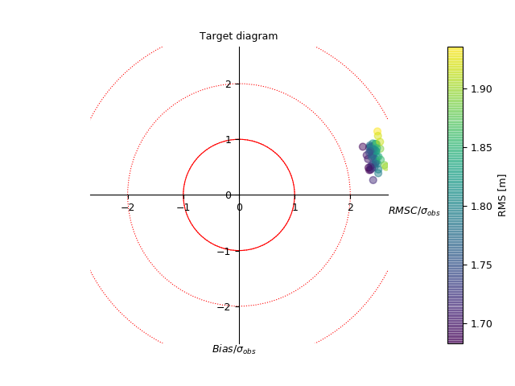

1.3.3.5.2.7. Target diagram¶
It has a similar usage to the Diagramme de Taylor diagram, except that it takes the bias into account.
See also : dtarget().

Comparison of model with observations at different time steps. The colors indicate the RMS, which is proportional to the distance to the center at coordinates (0,0).
# %% False data
import numpy as N
# - time axis
t = N.linspace(0., 100., 200)
# - observations
obs = N.sin(t)
# - model
nm = 50
mod = N.resize(obs, (nm, len(t)))
mod += N.random.uniform(-3, 3, mod.shape)+.5
# %% Make stats
from genutil.statistics import rms
bias = (mod-obs).mean(axis=1)
crms = rms(mod, N.resize(obs, mod.shape), centered=1, axis=1)
stdmod = mod.std(axis=1)
stdref = obs.std()
# %% Plot
from vacumm.misc.plot import dtarget
dtarget(bias, crms, stdmod, stdref, colors='rms', show=False, units='m',
scatter_alpha=0.5, sizes=40, savefigs=__file__, close=True)